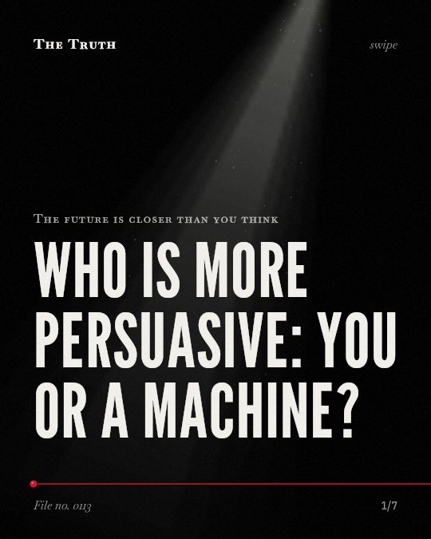

The future is closer than you think
Who is more persuasive: you or a machine?

An ai model can match or exceed human experts in persuasion.
In some cases, the persuasive impact of gpt-4 rivaled and even surpassed that of human experts.
Established. Several studies combined, or official data. The evidence is mixed.
What the research found
The persuasive impact of GPT-4 rivaled, and on some issues exceeded, that of the human experts.
“However, the persuasive impact of GPT-4 rivaled, and on some issues exceeded, that of the human experts.”
Experiment, 2025. Hackenburg et al., AI & Society.
Instructing current LLMs to role-play as partisans offers limited persuasive advantage.
“Taken together, our findings suggest that — contrary to popular concern — instructing current LLMs to role-play as partisans offers limited persuasive advantage”
Experiment, 2025. Hackenburg et al., AI & Society.
LLMs are comparably persuasive to campaign ads once seen, but traditional methods currently scale more effectively.
“We find that while LLMs are comparably persuasive to campaign ads once seen, real-world impact depends on both message reception and acceptance. ... However, traditional methods currently scale more effectively.”
Experiment, 2026. Chen et al., Journal of Experimental Political Science.
Strategically prompt-engineered LLM outputs incorporating empirically selected persuasive features significantly improve confidence in mental health professionals.
“Strategically prompt-engineered LLM outputs incorporating empirically selected persuasive features significantly improve confidence in mental health professionals.”
Randomized trial, 2026. Li et al., Frontiers in public health.
Large language models can match human performance in persuasion, but their success depends strongly on how they are implemented and embedded in communication contexts.
“Our results highlight that LLMs can match human performance in persuasion, but their success depends strongly on how they are implemented and embedded in communication contexts.”
Meta-analysis, 2025. Hölbling et al., Scientific reports.
Simulations estimate LLM-based persuasion costs $48–$75 per voter versus $100 for traditional methods.
“Simulations estimate LLM-based persuasion costs $48–$75 per voter versus $100 for traditional methods.”
Experiment, 2026. Chen et al., Journal of Experimental Political Science.
persuasion depends on how the model is used.
llms match human performance but their success depends on conversation design, domain, and specific implementation techniques. simple role-play as partisans offers limited advantage.
the method of influence is shifting.
that may be why digital interactions feel increasingly convincing. while traditional methods still scale better, ai can be engineered to target specific human confidence more effectively.
This part is our reading of the evidence, not a finding.
a conversation with a mental health professional.
you sit in a chair and speak about your anxiety. the words you hear are designed to build your confidence in the treatment.
The honest summary
The evidence shows that LLMs possess significant persuasive capabilities that can match or beat humans in specific contexts, but they are not yet more effective at large-scale distribution than traditional methods.
The success of LLM persuasion is heavily influenced by contextual factors like conversation design, domain, and the specific techniques used for implementation.
who is actually convincing you?
Sources
- Hölbling L, Maier S, Feuerriegel S (2025). A meta-analysis of the persuasive power of large language models. Scientific reports. Meta-analysis, cited 13 times.
- Kobi Hackenburg, Lujain Ibrahim, Ben M Tappin et al. (2025). Comparing the persuasiveness of role-playing large language models and human experts on polarized U.S. political issues. AI & Society. Experiment, cited 24 times.
- Zhongren Chen, Joshua Kalla, Quan Le et al. (2026). A Framework to Assess the Persuasion Risks Large Language Model Chatbots Pose to Democratic Societies. Journal of Experimental Political Science. Experiment.
- Li A, Yao ST, Chen BX, Li XY, Guo SY (2026). Prompt engineering a large language model with evidence-based persuasive features to improve confidence in mental health professionals: a pilot randomized experiment. Frontiers in public health. Randomized trial.
Also read for this file, not quoted
- Amugongo et al. (2025). Retrieval augmented generation for large language models in healthcare: A systematic review.
- Martín-Fernández et al. (2026). Principled Evaluation of Multi-Label Persuasion in Advertisements with Large Vision-Language Models.
This file was researched and drafted by software, then checked by rules a model cannot talk its way around: each quote above was matched word for word against the paper, and every number had to appear in it. How files are made.